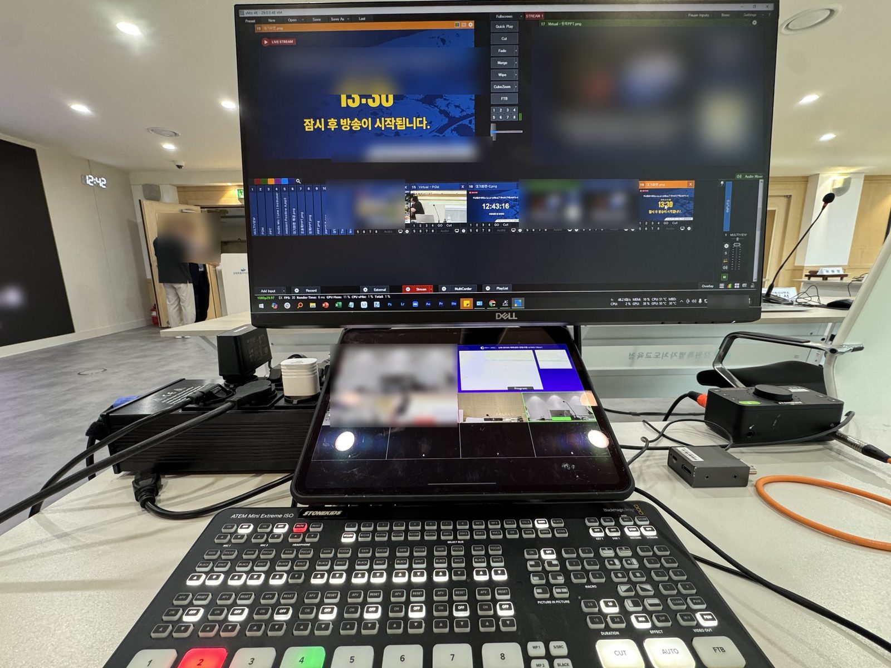

01 — 설계공모 심사 중계란
심사 전 과정을 실시간으로 공개하고, 빠짐없이 남기는 일
설계공모 심사 중계는 심사위원회의 작품 발표·질의응답·토론·투표를 카메라와 마이크로 담아 유튜브 등으로 실시간 공개하고, 전 과정을 녹화·녹음해 발주기관에 남기는 일입니다.
공개는 선택이 아니라 규정입니다. 국토교통부 「건축 설계공모 운영지침」은 이렇게 적고 있습니다.
“심사위원회의 진행은 정보통신 매체 등을 통해 실시간으로 공개해야 하며, 심사내용을 녹화 또는 녹음하여야 한다.”— 「건축 설계공모 운영지침」 제13조 제4항
그래서 학교·청사·문화시설의 설계공모를 발주하는 교육청과 지자체는 심사 때마다 중계와 기록을 준비해야 합니다. 스톤키즈는 이 일을 코로나19 이후 지금까지 계속해왔습니다.
7+2026년 9월까지 중계한 설계공모 심사
2납품 영상 — 방송 녹화본과 풀샷 촬영본
AI로컬 전사와 결과보고서 초안
전국춘천 본사, 전국 심사장 출장
02 — 맡는 범위
심사장에 필요한 것을, 한 팀이 준비합니다
발주 담당자가 따로 챙겨야 할 장비나 인력은 없습니다. 아래 일곱 가지가 스톤키즈의 기본 범위입니다.
- 01사전 협의 — 심사 일정, 좌석 배치, 공개 범위를 발주기관과 미리 맞춥니다.
- 02다중 카메라 촬영 — 발표자와 심사위원석, 심사장 전체(풀샷)를 나눠 담습니다.
- 03회의 마이크 · 현장 확성 — 위원 발언을 빠짐없이 수음하고, 심사장 안 확성까지 맡습니다.
- 04발표자료 PIP · 포인터 — 자료는 크게, 발표자는 작게. 발표자가 짚는 마우스 포인터까지 화면에 담습니다.
- 05유튜브 실시간 송출 — 중계 화면 그래픽(대기 화면·자막)을 사업명에 맞춰 제작하고, 공개·비공개 전환은 요청 즉시 실행합니다.
- 06전 구간 녹화 · 녹음 — 방송 녹화본, 풀샷 촬영본, 현장 녹음을 각각 남겨 납품합니다.
- 07AI 전사 · 결과보고서 초안 — 녹음을 외부 서버로 보내지 않고 전사해, 검토용 보고서 초안으로 정리합니다.

03 — 왜 전문 팀인가
심사에 개입하지 않고, 기록은 놓치지 않습니다
심사 중계는 일반 행사 중계와 다릅니다. 주인공은 심사위원과 작품이고, 중계 팀은 눈에 띄지 않아야 하며, 공정성에 영향을 주면 안 됩니다.
심사 도중 “이 부분은 비공개로 논의하자”는 결정이 나오면 송출만 즉시 닫고 기록은 유지합니다. 송출·기록·확성을 서로 다른 경로로 나눠 두었기 때문에 가능한 일입니다. 결정은 심사장이 하고, 우리는 지연 없이 실행합니다.
현장에서 쌓은 방식과 시스템 구성은 제작기에 자세히 적어 두었습니다.
04 — 진행 순서
문의부터 납품까지
- 01문의 — 심사일, 심사 장소, 응모 작품 수, 공개 범위를 알려 주십시오.
- 02운영안 · 견적 — 심사장 여건에 맞춘 운영안과 견적서를 보내드립니다. 비교견적과 계약 서류도 함께 준비합니다.
- 03설치 · 점검 — 심사 전에 장비를 설치하고 영상·음향·송출을 점검합니다.
- 04심사 당일 중계 — 실시간 송출과 녹화·녹음을 동시에 운영합니다.
- 05납품 — 방송 녹화본, 풀샷 촬영본, 녹음 파일을 전달하고 요청 시 결과보고서 초안을 드립니다.
FAQ — 자주 묻는 질문
담당자분들이 가장 많이 묻는 것
설계공모 심사는 꼭 생중계해야 하나요?
「건축 설계공모 운영지침」 제13조 제4항은 심사위원회 진행을 정보통신 매체로 실시간 공개하고, 심사 내용을 녹화 또는 녹음하도록 정하고 있습니다. 이 지침을 따르는 공공 설계공모라면 중계와 기록을 함께 준비해야 합니다.
설계공모 심사 중계 업체는 어떤 일을 하나요?
심사장에 카메라와 마이크를 설치해 발표·질의·토론·투표를 촬영하고, 발표자료 화면과 합성해 유튜브 등으로 실시간 송출합니다. 동시에 전 구간을 녹화·녹음해 발주기관에 납품합니다. 스톤키즈는 여기에 AI 전사와 결과보고서 초안까지 제공합니다.
심사 중 비공개로 논의해야 하는 구간은 어떻게 하나요?
요청 즉시 송출만 닫고, 규정에 따른 기록은 유지합니다. 송출과 기록의 경로를 분리해 두었기 때문에 공개 범위는 심사장의 결정대로 조정할 수 있습니다.
심사가 끝나면 무엇을 받나요?
실시간 송출 화면을 그대로 담은 방송 녹화본, 심사장 전체를 담은 풀샷 촬영본, 현장 녹음 파일을 드립니다. 요청하시면 전사 전문과 결과보고서 초안도 함께 드립니다. 보고서 초안은 참고용이며 확정 문서는 담당자의 확인을 거쳐야 합니다.
강원도 밖에서도 의뢰할 수 있나요?
가능합니다. 본사는 강원특별자치도 춘천이고, 장비와 인력이 함께 이동해 전국의 심사장에서 같은 방식으로 운영합니다.
견적은 어떻게 받나요?
심사일, 장소, 응모 작품 수, 예상 심사 시간을 알려 주시면 운영안과 견적서를 보내드립니다. 대표번호 1600-2687 또는 support@stonekids.tv로 연락 주십시오.